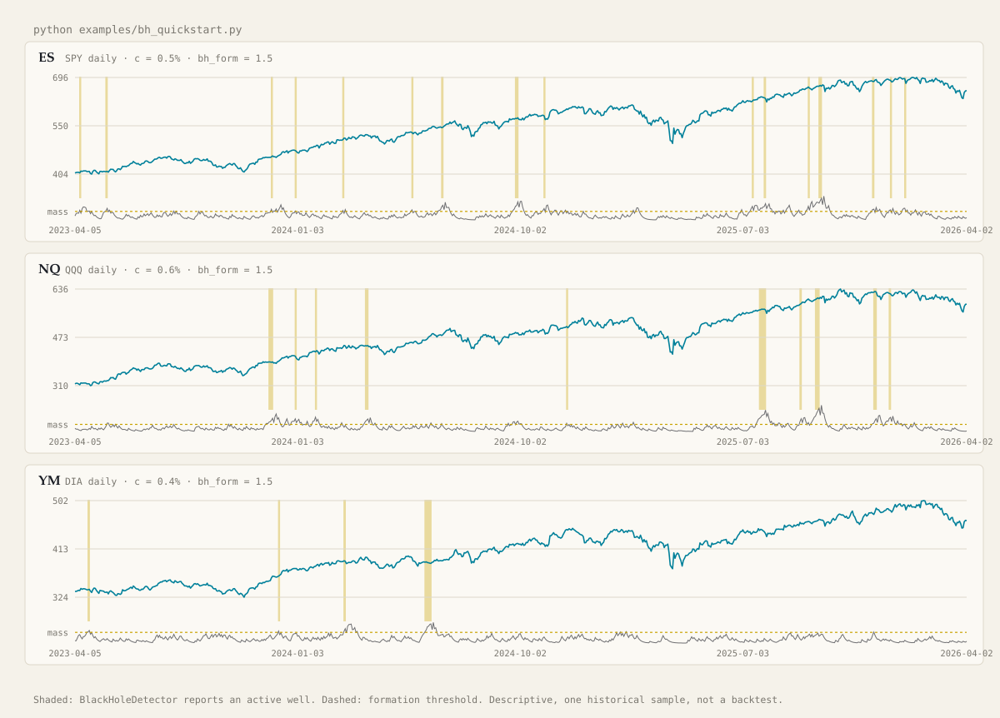
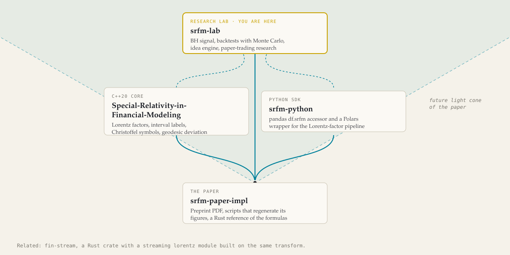

Special Relativity in Financial Modeling
Price paths as worldlines.
Every bar is tested against a light cone. Ordered, timelike bars build mass; when the mass crosses a threshold a black-hole well forms. This is the lab where that idea gets pushed through backtests, Monte Carlo and a paper trader.
Research code, not financial advice. The diagram below is the real output of MinkowskiClassifier and BlackHoleDetector from lib/srfm_core.py on the SPY, QQQ and DIA daily closes bundled in the repo.
Quick start
Five commands, no API keys.
Python 3.12+ and the pinned core requirements. The example runs the physics on hourly bars cached in the repo, prints a table and saves a chart. The output below is what it printed today.
git clone --filter=blob:none https://github.com/Mattbusel/srfm-lab cd srfm-lab python -m venv .venv && source .venv/bin/activate pip install -r requirements-core.txt python examples/bh_quickstart.py
$ python examples/bh_quickstart.py proxy bars from to timelike % BH active % onsets all days |ret 5d| % onset signed ret 5d % onset hit rate % symbol ES SPY 1542 2020-02-10 2026-04-02 43.45 2.85 23 1.87 -0.73 21.74 NQ QQQ 1541 2020-02-10 2026-04-02 38.94 2.79 16 2.42 -0.23 50.00 YM DIA 1542 2020-02-10 2026-04-02 39.23 1.23 8 1.76 -0.38 12.50 Descriptive statistics on one historical sample; not a backtest, no costs, not financial advice. chart saved to examples/output/bh_quickstart.png
On Windows, activate with .venv\Scripts\activate. Run the tests with pip install -r requirements-dev.txt && pytest tests -q, which is what CI runs on Python 3.12 and 3.13.
How it works
A light cone per bar, a well when order persists.
Two small classes carry the idea. Everything else in the lab is built on top of what they emit.
Timelike or spacelike
MinkowskiClassifier divides each bar's return by a per-instrument speed of light c. Below 1 the bar is timelike, an ordered move; at or above 1 it is spacelike, an anomalous jump. The interval is ds² = c²dt² − dx².
Mass, then a well
BlackHoleDetector adds mass on consecutive timelike bars and bleeds it on spacelike ones. A well forms when mass crosses bh_form after five ordered bars in a row, and points the way the price has been moving.
The rest of the lab
GARCH vol scaling, an OU sleeve, geodesic and Hawking monitors, backtests with Monte Carlo, an Alpaca paper trader, and an idea engine that mines backtest trades and proposes parameter changes. Most of it needs keys or services.

The SRFM family
Four repositories, one idea.
The paper sits at the origin. The C++ core and the Python SDK implement its formulas; this lab builds trading research on them.

srfm-paper-impl
The preprint PDF, scripts and a notebook that regenerate its figures, and a dependency-free Rust reference of the core formulas.
github.com/Mattbusel/srfm-paper-impl → C++20 coreSpecial-Relativity-in-Financial-Modeling
Price velocity, Lorentz factor, spacetime-interval labels, Christoffel symbols and geodesic deviation on OHLCV bars, with Python validation scripts.
github.com/Mattbusel/Special-Relativity-in-Financial-Modeling → Python SDKsrfm-python
A pandas df.srfm accessor and a Polars wrapper for the Lorentz-factor pipeline. NumPy only.
srfm-lab
The black-hole signal, backtests with Monte Carlo, the idea engine and paper-trading research, across nine languages.
github.com/Mattbusel/srfm-lab →Related: fin-stream, a Rust crate for streaming market data with a lorentz module built on the same transform.
Read this before anything else
Research code, not financial advice.
What the quick start shows
On the bundled 2020 to 2026 sample, the 5-day move after a well forms, signed by the well's direction, averages below zero on all three ETFs. With these parameters the bare signal does not predict the next week. The lab exists to test ideas like this one, including when they fail.
What the rest of the repo is
A research monorepo, not a product. Backtest and paper-trading results are experiments on historical or simulated data and swing widely by period and parameters. Nothing here should trade real money without your own independent validation.